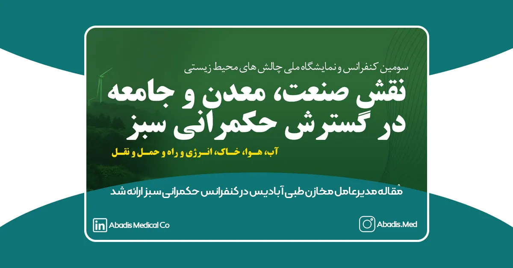
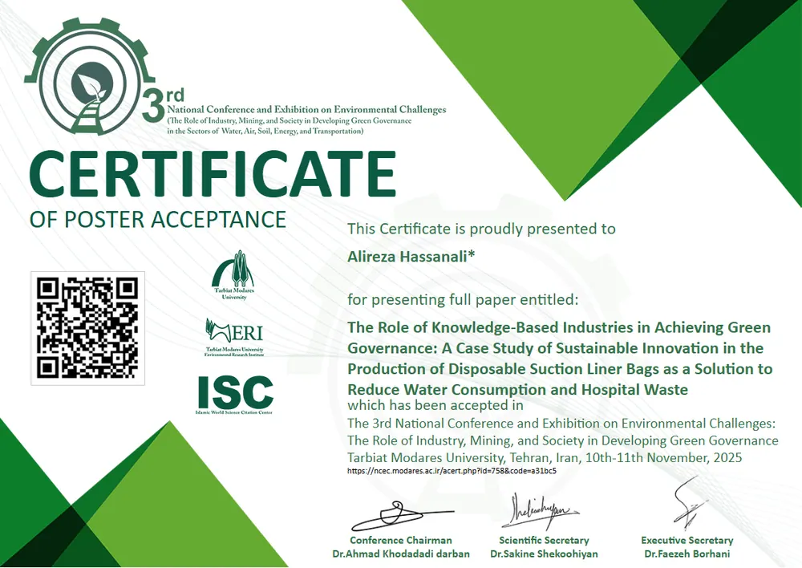
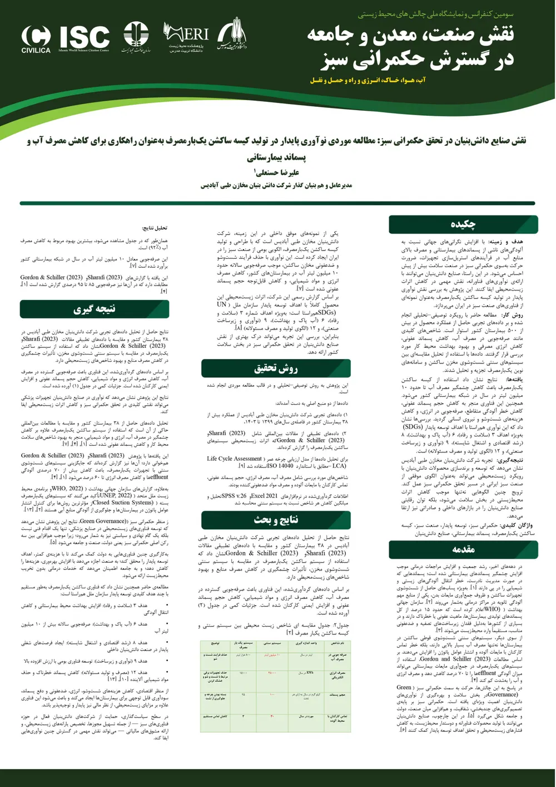

سومین کنفرانس و نمایشگاه ملی «چالشهای محیطزیستی: نقش صنعت، معدن و جامعه در گسترش حکمرانی سبز» با محوریت توسعه پایدار و با حضور جمعی از اساتید برجسته، پژوهشگران، مدیران صنعتی و مسئولان عالیرتبه کشور، در ۱۹ و ۲۰ آبانماه ۱۴۰۴ به میزبانی دانشگاه تربیت مدرس برگزار شد.
این رویداد معتبر که در پایگاه استنادی علوم جهان اسلام (ISC) نمایه میشود، یکی از مهمترین گردهماییهای علمی کشور در حوزه حکمرانی محیطزیستی به شمار میرود.
مشارکت مخازن طبی آبادیس و ارائه مقاله علمی
در این رویداد، جناب آقای علیرضا حسنعلی مدیرعامل و همبنیانگذار شرکت دانشبنیان مخازن طبی آبادیس مقالهای با عنوان:**«نقش صنایع دانشبنیان در تحقق حکمرانی سبز: مطالعه موردی نوآوری پایدار در تولید کیسه ساکشن یکبارمصرف بهعنوان راهکاری برای کاهش مصرف آب و پسماند بیمارستانی»**را ارائه کردند.
این مقاله به بررسی تأثیر فناوریهای نوآورانه در صنعت تجهیزات پزشکی، بهویژه نقش کیسههای ساکشن یکبارمصرف در کاهش پسماند بیمارستانی، مدیریت بهینه منابع آب و ارتقای شاخصهای حکمرانی سبز میپردازد.
زمان و مکان برگزاری کنفرانس
افتتاحیه:
ساعت ۹ صبح
روز ۱۹ آبانماه ۱۴۰۴
بهصورت حضوری و مجازی
سالن جابر بن حیان – دانشگاه تربیت مدرس (جنب ساختمان جوانه)
اختتامیه:
ساعت ۸:۳۰ صبح
روز ۲۰ آبانماه ۱۴۰۴
بهصورت حضوری
سالن جابر بن حیان – دانشگاه تربیت مدرس
حضور چهرههای برجسته و مقامات ارشد محیط زیست
این کنفرانس با حضور شخصیتهای کلیدی حوزه محیطزیست برگزار شد؛ از جمله:
-
خانم دکتر معصومه ابتکار
-
خانم دکتر شینا انصاری (معاون رئیسجمهور و رئیس سازمان حفاظت محیطزیست)
حضور این افراد بر اهمیت موضوع توسعه پایدار و نقش صنایع در تحقق حکمرانی سبز تأکید ویژه داشت.
دریافت گواهی ارائه مقاله (Certificate) — نسخه منتشرشده در سایت کنفرانس
با پذیرش نهایی و ارائه موفق مقاله، گواهی رسمی ارائه مقاله برای آقای علیرضا حسنعلی صادر شد.

پوستر رسمی مقاله

گامی دیگر در مسیر توسعه سبز صنعت تجهیزات پزشکی
شرکت دانشبنیان مخازن طبی آبادیس با ارائه این مقاله و حضور فعال در این رویداد معتبر ملی، بار دیگر بر تعهد خود به نوآوری، پایداری، سلامت محیطزیست و تولید دانش فنی بومی تأکید میکند.
این شرکت با توسعه محصولات سازگار با محیطزیست همچون کیسه ساکشن یکبارمصرف، فیلترهای ایمنی بیمارستانی و تجهیزات کنترل عفونت، نقشی مهم در کاهش پسماندهای خطرناک، مدیریت مصرف آب و ارتقای استانداردهای ایمنی در مراکز درمانی کشور ایفا میکند.
برای دانلود مقاله روی این لینک کلیک نمایید.